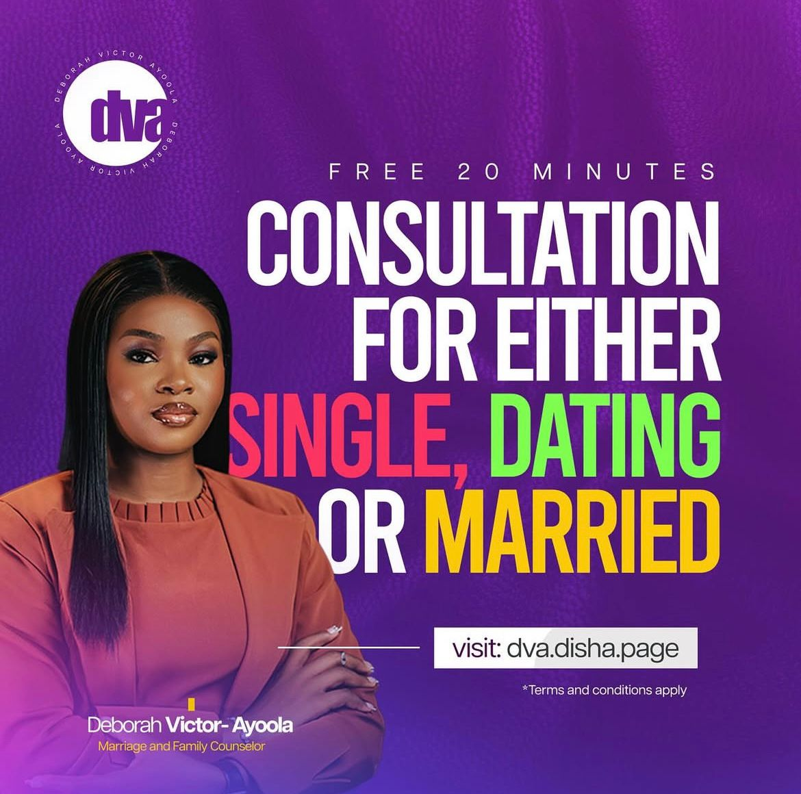
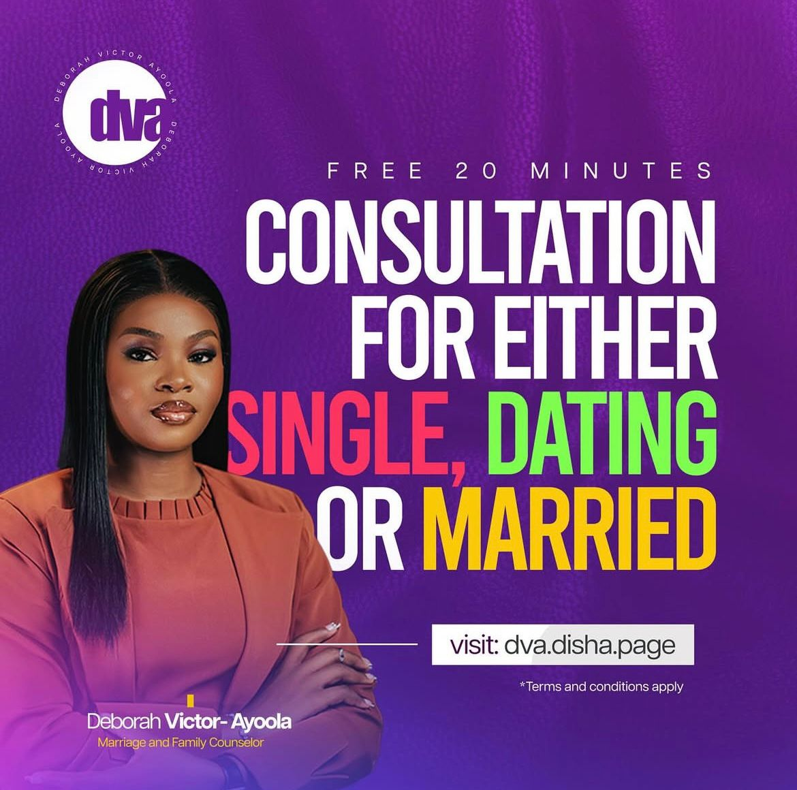

My Services
Marriage Counseling
Personalized sessions for couples to resolve conflicts, strengthen communication, and build a lasting, loving relationship rooted in faith and understanding.
Personalized sessions for couples to resolve conflicts, strengthen communication, and build a lasting, loving relationship rooted in faith and understanding.
Courtship Guidance
Guidance for singles and couples navigating courtship, with practical tools and biblical principles to prepare for a purposeful, godly marriage.
Guidance for singles and couples navigating courtship, with practical tools and biblical principles to prepare for a purposeful, godly marriage.
Pre-Marital Programs
Comprehensive pre-marital counseling and workshops, including critical questions, values alignment, and emotional readiness for a successful marriage.
Comprehensive pre-marital counseling and workshops, including critical questions, values alignment, and emotional readiness for a successful marriage.
Family Life Coaching
Support for families at every stage—parenting, conflict resolution, and family vision—empowering you to create a thriving, faith-filled home.
Support for families at every stage—parenting, conflict resolution, and family vision—empowering you to create a thriving, faith-filled home.
Conferences & Community
Catch Them Young Conference
An annual event equipping singles and young adults with the knowledge, spiritual tools, and mentorship to build godly marriages from the start.
An annual event equipping singles and young adults with the knowledge, spiritual tools, and mentorship to build godly marriages from the start.
The Godly Marriage Tribe
A vibrant online community for singles and couples, offering support, resources, and group mentorship to nurture healthy relationships and faith-based marriages.
A vibrant online community for singles and couples, offering support, resources, and group mentorship to nurture healthy relationships and faith-based marriages.
Kingdom Marriage Conference
A yearly gathering for couples and families, focused on realigning marriages with biblical principles, featuring expert speakers, workshops, and interactive sessions.
A yearly gathering for couples and families, focused on realigning marriages with biblical principles, featuring expert speakers, workshops, and interactive sessions.
My Book

Courtship Compass – A practical guide with 150+ critical questions singles should ask before marriage.
Get the Book
Love Is Not Enough – The book LOVE IS NOT ENOUGH seeks to answer some of these questions and shed more light on the other aspects to be considered to have a happy and successful marriage.
Get the Book


 
